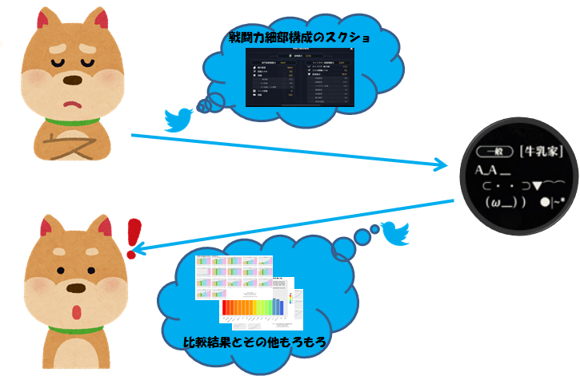
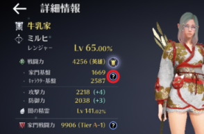
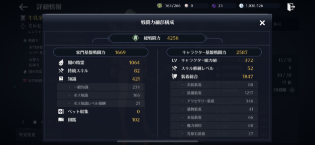

項目毎に戦闘力100区切りの平均値との比較です。
バー平均よりも下回っている場合は、そこが伸びしろ候補です。
バーの上に書いている数値は、戦闘力(あなたとの差分)です。
差分の数値をみて、どの程度伸びしろがあるのか確認してください。
そんなとこないよって人は、黒い精霊 and/or アクセ and/or 遺物突破 and/or 討伐を頑張ってください。
そこらへんの上限値がわからないので。。。
黒い砂漠モバイルでは、他の人の戦闘力の構成は非公開です。そのため、Twitter上で戦闘力細部構成のスクリーンショットをおくってもらい、分析？しています。

2つのプロットをTLないしDMでお送りします。
お送りするプロットはもっと高解像度です。
あと、いままでコメントつけてましたが、時間がかかるので省きます。ごめんなさい。
項目毎に戦闘力100区切りの平均値との比較です。
バー平均よりも下回っている場合は、そこが伸びしろ候補です。
バーの上に書いている数値は、戦闘力(あなたとの差分)です。
差分の数値をみて、どの程度伸びしろがあるのか確認してください。
そんなとこないよって人は、黒い精霊 and/or アクセ and/or 遺物突破 and/or 討伐を頑張ってください。
そこらへんの上限値がわからないので。。。

プレイヤー毎の戦闘力100区切りの平均値の散布図と回帰曲線です。
黒丸が平均値で、赤丸があなたのデータです。
複数回送って頂いている場合は、過去のデータ(戦闘力が低いデータ)ほど色が薄くしてます。
赤丸が青い線より下にあるところが伸びしろ候補です。
項目は上の図と変わりませんが、こちらのほうが視覚的にとらえることができます。 サンプルが少ないため、青い線はサンプル数とともに変化します。
自分のキャラクター情報を表示し、 赤丸の?をタップ。

そうすると、戦闘力細部構成が表示されます。

スクリーンショットは、表示したまま(光原石が見切れるくらい)で大丈夫です。
成長ボーナスは他の項目から算出できますし、成長ボーナスの細部は記録していません。
追って、上記のプロットをお送りいたします。
なお、DMはフォロー外からも受け取るようにしています。
ゲーム用アカウント以外しかアカウントがなく、痕跡を残したくない場合は、メッセージ内で教えてください。
その場合、フォローをしません。
こちらからプロットを送信した後は、DMを削除していただいてもかまいませんし、不安であればブロックしていただいて構いません。
嫁さんに内緒の作業(黒さば自体も含めて)です(;ωA
対応可能な時間帯の目安は以下のとおり。
上記時間以外にお送りいただいた分は後ほど対応いたします。